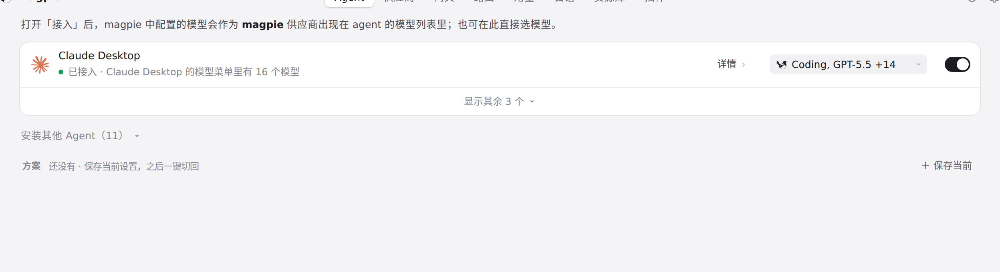
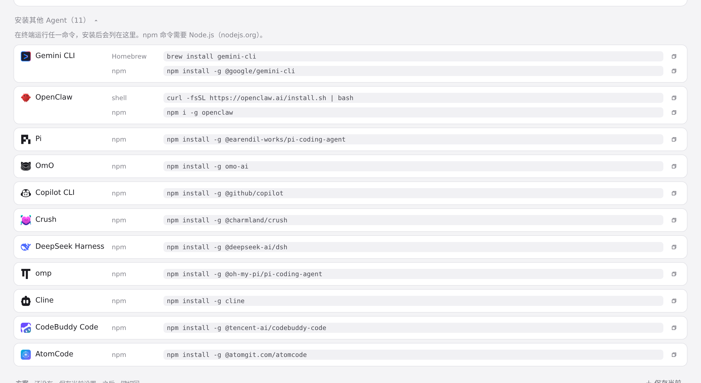

#1088 界面预览
commit d92867f · 回到 PR · 该 PR 把 OpenClaw 接入 Agent 页：未安装时出现在「安装其他 Agent」列表中，给出 shell/PowerShell 与 npm 两条带复制按钮的安装命令并使用官方彩色图标；已接入时用同一套连接开关，并提示在 OpenClaw 的 /model 里选模型。同时为只读配置和 $include 配置补了简中、繁中、日文、德文错误文案。
红线是鼠标走过的轨迹，红色圆环是一次点击；底部文字是这一步在做什么。空格暂停，← → 逐段查看。

「安装其他 Agent」里的 OpenClaw · 展开前的「安装其他 Agent」条目

「安装其他 Agent」里的 OpenClaw · 展开后的安装列表，OpenClaw 一行及其命令与复制按钮